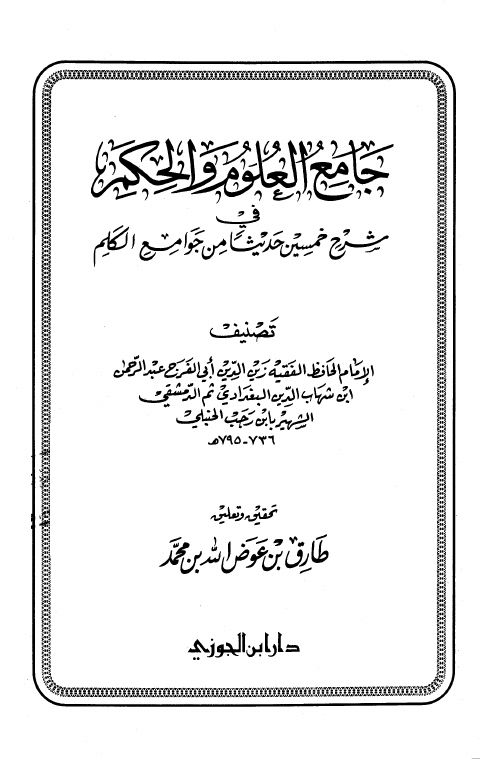
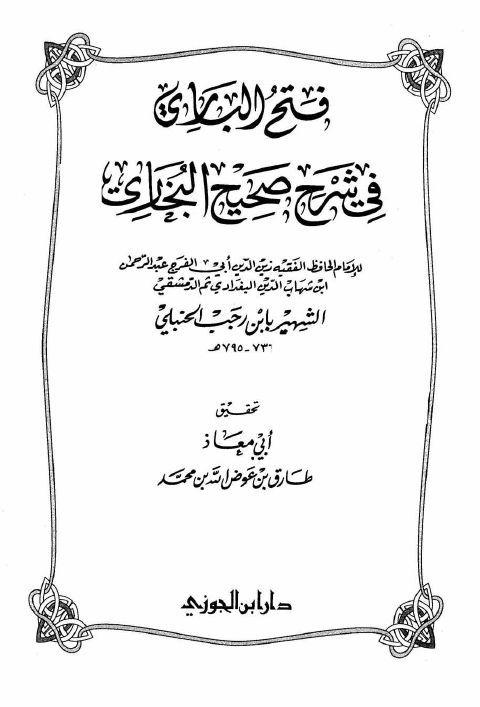
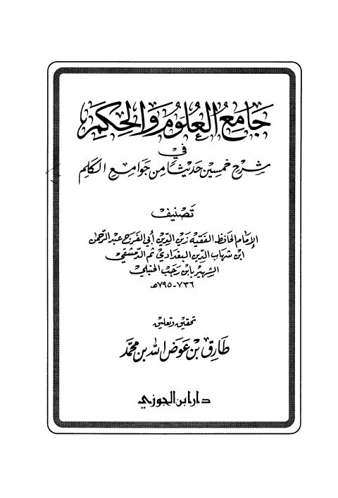

جامع العلوم والحكم في شرح خمسين حديثًا من جوامع الكلم- ت. طارق أبو معاذ جامع العلوم والحكم في شرح خمسين حديثًا من جوامع الكلم- ت. طارق أبو معاذ عبد الرحمن البغدادي بن رجب الحنبلي
فتح الباري في شرح صحيح البخاري- ط. دار ابن الجوزي فتح الباري في شرح صحيح البخاري- ط. دار ابن الجوزي عبد الرحمن البغدادي بن رجب الحنبلي
جامع العلوم والحكم في شرح خمسين حديثًا من جوامع الكلم- ت. طارق أبو معاذ جامع العلوم والحكم في شرح خمسين حديثًا من جوامع الكلم- ت. طارق أبو معاذ عبد الرحمن البغدادي بن رجب الحنبلي